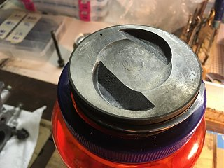
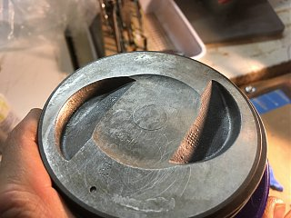
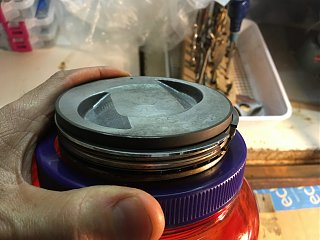

-
woops nevermind. the picture posted solves your issues.
the cc should be the same. i thought the lower picture was the vg33 and the chamber was larger to touch the edge of the firing ring, but it looks like the top picture is of the vg33, and you can see the gasket is larger than the chamber itself. so this statement here:
holds true. you should be fine, and it should be same as vg30 cc vol. but i would still check.theoretically, as long as the quench pads fall within the bore diameter, the head volume doesn't have to change.
also, you're supposed to redrill the steam holes on the vg33 head if using on a vg30. -
I know that, but I'm talking about the actual combustion chamber. Since I'm not measuring it myself, or integrating finite points (god forbid) around a model of a vg33 cylinder head, the only way to calculate the volume of the combustion chamber is with known values. That means the combustion chamber volumes are different between vg30 and vg33 (since they are the same stroke & comp & different bore), and the only way the heads are exactly identical is if the pistons have different size center dish/ valve relief, etc., making up for the difference in bore to achieve the same CR.Careless;342846 wrote: piston dome doesn't have anything to do with the cc volume of the head. mainly because the piston is the piston, and the head is the head, but also because if you look at a vg33 piston, there is no dome. there is actually a center dish and two valve reliefs.
theoretically, as long as the quench pads fall within the bore diameter, the head volume doesn't have to change. this could let you use a vg30 head on a vg33 motor. I haven't tried - so I don't know… But i would get my heads back and check the volume because this picture here shows what may be a slight difference in combustion chamber's edge shape so that the chamber gets as close to the firing ring as possible.
Like you said earlier, the only realistic and accurate way to calculate the CR of his setup is to have some measured values. Assuming the heads have the exact same CC was the measured assumption he made in order to calculate CR, although I don't know if it is entirely correct. I wouldn't go on "everyone said this though." But who knows…might all work out in the end. Just make sure the assumption is on the conservative side. -
The small ports by the middle and right combustion chamber? And no you don't redrill them. The MLS gaskets everyone has been using forever blocks them off anyhow. My car ran fine on them blocked off beforehand (vg30 block and heads).Careless;342853 wrote:
also, you're supposed to redrill the steam holes on the vg33 head if using on a vg30.Usual Z31 suspect: Garage Queen (aka broken)

-
actualy you could just drill the gasket and the heads to make use of the holes again if you wanted to. if you don't then whatever. it's an option that might help in cooling the heads. -
I get that, but why drill good vg33 heads that one day might be used on a vg33 block. Those holes are super close to the combustion chamber.Careless;342925 wrote: actualy you could just drill the gasket and the heads to make use of the holes again if you wanted to. if you don't then whatever. it's an option that might help in cooling the heads.Usual Z31 suspect: Garage Queen (aka broken)
-
that's exactly why i would drill them if the clear the firing ring on the new gaskets. could help get rid of some of the heat around the top of the cylinder.300zxturboftw;342938 wrote: I get that, but why drill good vg33 heads that one day might be used on a vg33 block.
well as you said, if the gasket you use doesn't have the holes, then the holes will do nothing anyways if you put the heads on a vg33 block- just as they do nothing on the vg30 with whatever sans-hole gaskets you have that you mentioned previously, right?
i'm sure most people run them without drilling them just fine. but your block has the holes, so I would personally make use of them. wuteve.
300zxturboftw;342938 wrote: Those holes are super close to the combustion chamber. -
I get what youre saying. Just personally its not worth the extra work to me personally. Even if it does take 5 minutes to line up and drill I doubt it makes a huge difference.Usual Z31 suspect: Garage Queen (aka broken)
-
eh no worries. i say anything that makes the engine run cooler is always a good investment, but some people can't be bothered. you have an agenda you'd like to keep and it's been going smoothly for you- so no point in sidestepping it to drill a couple of small holes for a couple of potential degrees of cooling. -
.035" or .044" piston to head clearance? What do you recommend. I'm thinking .044" to be safe to account for expansion even though my bottom end shouldn't see much with the type of forged metal used.Usual Z31 suspect: Garage Queen (aka broken)
-
I just did this recently…you can actually back into it mathematically. You actually just need one take one measurement (piston head volume) and use all the published OEM measurements.
Technically, this is how it plays out…
Total Chamber volume: 53.5cc's, based on a measured piston head volume of 8cc's and compression ratio of 8.9:1.OEM ENGINE SPECIFICATIONS (mm) (in) CYLINDER BORE 91.5 PUBLISHED 3.60 STROKE 83.0 PUBLISHED 3.27 GASKET THICKNESS (compressed) (mm) Victor Reinz 1.146 PUBLISHED 0.05 GASKET BORE 92.0 PUBLISHED 3.62 DECK CLEARANCE 0.0 PUBLISHED 0.00 VOLUME (cc) (cin) (Liters) CYLINDER HEAD CHAMBER VOLUME (each) 53.5 CALCULATED 3.26 0.053 PISTON HEAD VOLUME 8.0 MEASURED 0.49 0.008 GASKET VOLUME 7.6 CALCULATED 0.46 0.008 SWEPT VOLUME 545.8 PUBLISHED 33.30 0.546 DECK VOLUME 0.0 PUBLISHED 0.00 0.000 TOTAL COMPRESSED (CHAMBER) VOLUME (TDC VOLUME 69.1 CALCULATED 4.22 0.069 TOTAL UNCOMPRESSED VOLUME 614.9 CALCULATED 37.52 0.615 ACTUAL TOTAL ENGINE VOLUME 3689 CALCULATED 225.12 3.689 TOTAL PUBLISHED ENGINE VOLUME (swept volume X 6 cyl's) 3275 PUBLISHED 199.83 3.27 COMPRESSION RATIO 8.90 PUBLISHED Last edited by spddm0n; 05-22-2017, 05:02 AM. -
Hey, where are you guys getting 55cc of chamber volume on VG33E heads? Have you measured these, or is this published somewhere? I measured my chamber volume at 49cc's after a 0.005" milling on the heads (I have a second set that was milled by 0.010" and measure about the same volume). I'm trying to determined where the large discrepancy is. I measured the approximate "area" of the chamber opening at the surface (block) to be about 7.3in^2, so if you were to mill the head by .010", you would not reduce the volume by more than 1.2cc. If the OEM standard chamber volume was 55cc's, I would still see 53-54cc's after milling. I'm seeing 49cc's after several repeated measurements. Perhaps my little syringe is that far off??Originally posted by Careless View Post
I also know that Nissan published a large variance on the "nominal height" of the head, so it's hard to say if that comes into play, depending on if this affected the chamber volume, or just the valve cover side of the head. -
Also, has anyone measured the piston head volume on a VG33E piston? I measured mine at 8cc's. Is the VG30E much flatter? Did it not have the relief cuts for the valves or the deeper dish? I've never seen the VG30E pistons.
Here is a pic of my VG33E piston.
  

Copyright © 2006–. All rights reserved. Privacy Policy